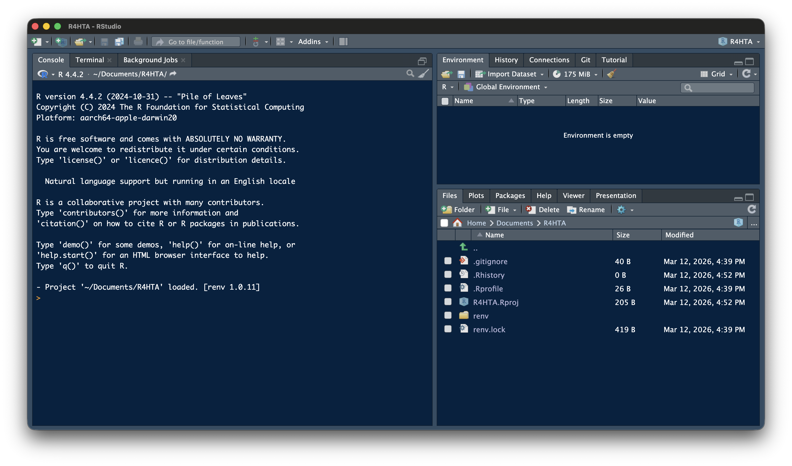
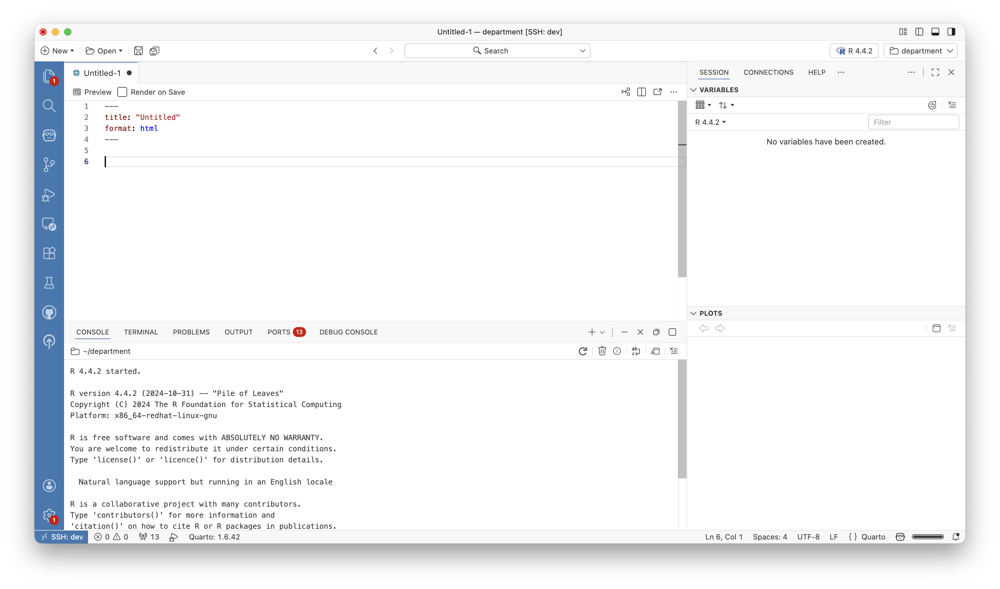

Orientation to R
Getting comfortable with R and RStudio
Ashwini Kalantri
Professor of Community Medicine, MGIMS, Sevagram
17 Mar 2026
What This Session Is (and Isn’t)
This is not an R programming course.
You do not need to memorise anything here.
Goal: Build enough familiarity that when you see R code:
- You can recognise what it is doing
- You can change an input value
- You can run it and see output
- You are not intimidated by it
Think of this as learning to read a language well enough to follow a conversation — not to write poetry.
The RStudio Interface

The RStudio Interface

A sneak peek into Positron

Your first code
Assignment
<-
Reserved Words
- if
- else
- while
- repeat
- for
- function
- in
- next
- break
- TRUE
- FALSE
- NULL
- Inf
- NaN
- NA
- NA_integer
- NA_real
- NA_complex_
- NA_character_
- …
Operators
Arithmetic
Addition
Subtraction
Multiplication
Division
Arithmetic
Exponentiation
Modulus
Relational
Greater
Lesser
Equal
Relational
Greater or equal
Lesser or equal
Not Equal
Joining Logical
AND
OR
Classes
Integer
Numeric
Character
Classes
Logical
Date
[1] "2023-12-18"Class Conversion
Objects
Vectors
[1] 2.0 4.0 6.0 8.0 3.0 5.5 4.0[1] "2023-11-28" "2023-12-22" "2026-03-12"[1] 3Matrix
[,1] [,2] [,3] [,4] [,5] [,6]
[1,] "A" "G" "M" "S" "Y" "E"
[2,] "B" "H" "N" "T" "Z" "F"
[3,] "C" "I" "O" "U" "A" "G"
[4,] "D" "J" "P" "V" "B" "H"
[5,] "E" "K" "Q" "W" "C" "I"
[6,] "F" "L" "R" "X" "D" "J" Factor
[1] Male Female Female Male Male Male Female Female Male Female
[11] Male
Levels: Male FemaleData Frames
age <- c(12,24,NA,23,65,33) # create age vector
gender <- c("M","F","F","M","M","F") #create gender vector
occu <- factor(c(1,4,3,2,4,5), #occupation
levels = c(1:5),
labels = c("Unemp","Service","Student","Business","Prof"))
#date of birth
dob <- c(as.Date("1993-01-16"),as.Date("1963-12-24"),as.Date("1971-01-05"),
as.Date("1982-11-11"),as.Date("1984-05-15"),as.Date("1999-03-07"))
#create data frame
df <- data.frame(age,gender,occu,dob)Data Frames
age gender occu dob
1 12 M Unemp 1993-01-16
2 24 F Business 1963-12-24
3 NA F Student 1971-01-05
4 23 M Service 1982-11-11
5 65 M Business 1984-05-15
6 33 F Prof 1999-03-07List
[[1]]
age gender occu dob
1 12 M Unemp 1993-01-16
2 24 F Business 1963-12-24
3 NA F Student 1971-01-05
4 23 M Service 1982-11-11
5 65 M Business 1984-05-15
6 33 F Prof 1999-03-07
[[2]]
[1] "1993-01-16" "1963-12-24" "1971-01-05" "1982-11-11" "1984-05-15"
[6] "1999-03-07"
[[3]]
[,1] [,2] [,3] [,4] [,5] [,6]
[1,] "A" "G" "M" "S" "Y" "E"
[2,] "B" "H" "N" "T" "Z" "F"
[3,] "C" "I" "O" "U" "A" "G"
[4,] "D" "J" "P" "V" "B" "H"
[5,] "E" "K" "Q" "W" "C" "I"
[6,] "F" "L" "R" "X" "D" "J"
[[4]]
[1] 2.0 4.0 6.0 8.0 3.0 5.5 4.0List
List with nth object(s)
nth object
selecting withing object
Functions
Functions
Functions
Packages
Working Directory
Projects
Scripts
- Names
- Spaces
- Pipes
- Comments
Names
Spaces
Pipes
# Avoid
pipe <- df %>% select(age,dob,occu) %>% mutate(age_cat = if_else(age < 20,"Young","Old"))
# Strive for
pipe <- df %>%
select(age, dob, occu) %>%
mutate(age_cat = if_else(age < 20, "Young", "Old"))
# Avoid
pipe <- df %>%
select(age, dob, occu) %>%
summarise(age_cat = mean(
age,
na.rm = TRUE)
)
# Strive for
pipe <- df %>%
select(age, dob, occu) %>%
summarise(age_cat = mean(
age,
na.rm = TRUE)
)Commenting
Sections
Importing Data
CSV
Excel
Stata, SPSS
A Swiss-Army Knife for Data I/O
Loops
R for HTA (Basics) — RRC-HTA, AIIMS Bhopal